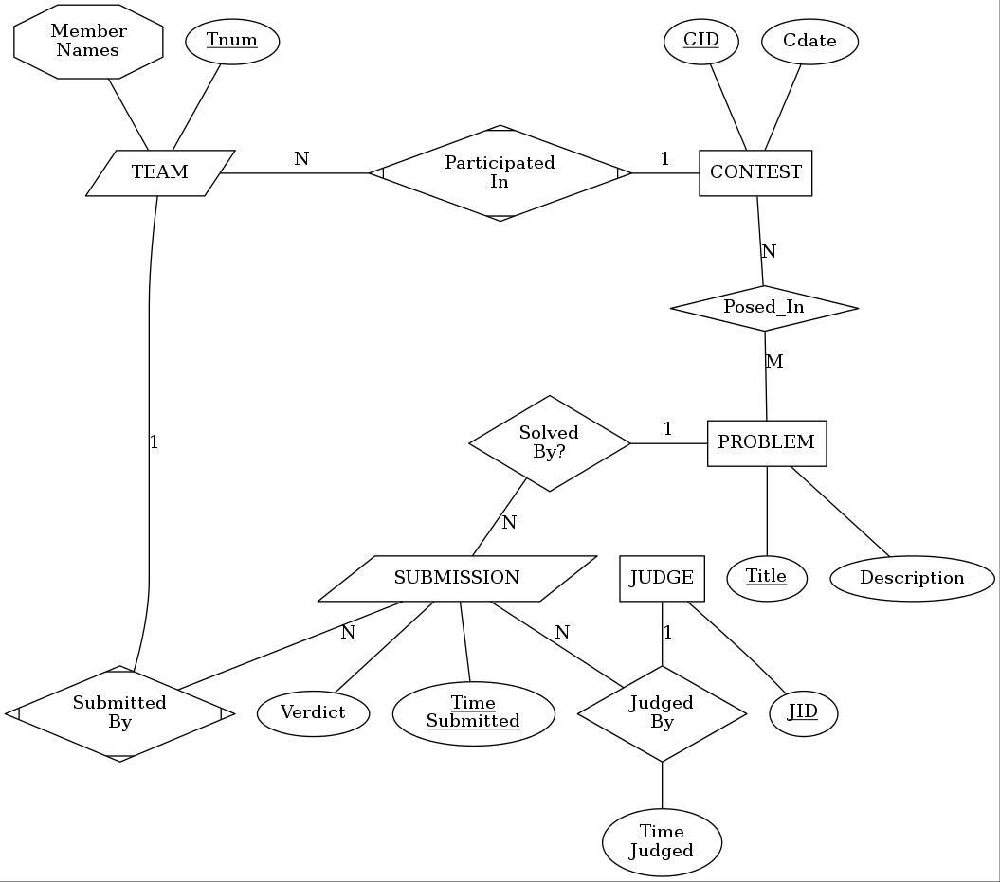

(ii) For each delete operation (i.e., (f) and (g)), identify all tuples (other than the one explicitly mentioned) that would be removed from the database, assuming (contrary to part (i)) that the ON DELETE CASCADE option were in effect for each foreign key in the database. (This option says that, if tuple A refers (via a foreign key) to tuple B, and tuple B is deleted, then tuple A must also be deleted.)
|
(a) Insert <'End Global Warming', 13, 'Scranton', 8>
into Project. (b) Insert <'888665555', 7, 'Many'> into Works_On. (c) Insert <4, NULL> into Dept_Locations. (d) Insert <'Mary', 'J', 'Rumplestiltskin', '333445555', '1923-04-20', '13 Elm St., Nowhere,CA', 'G', 21325, '123456789', 1> into Employee. (e) Change the tuple <1, 'Houston'> in the Dept_Locations table to <NULL, 'Houston'> (f) Delete from the Employee table the tuple whose Ssn attribute has value '987654321'. (g) Delete from the Department table the tuple having value 4 in its Dnumber attribute. |
|
Due to limitations of the software that was used to produce the diagram (or perhaps your instructor's lack of familiarity with its features), certain diagramatic conventions used here differ from those used in the textbook. Specifically,

{kind=link}